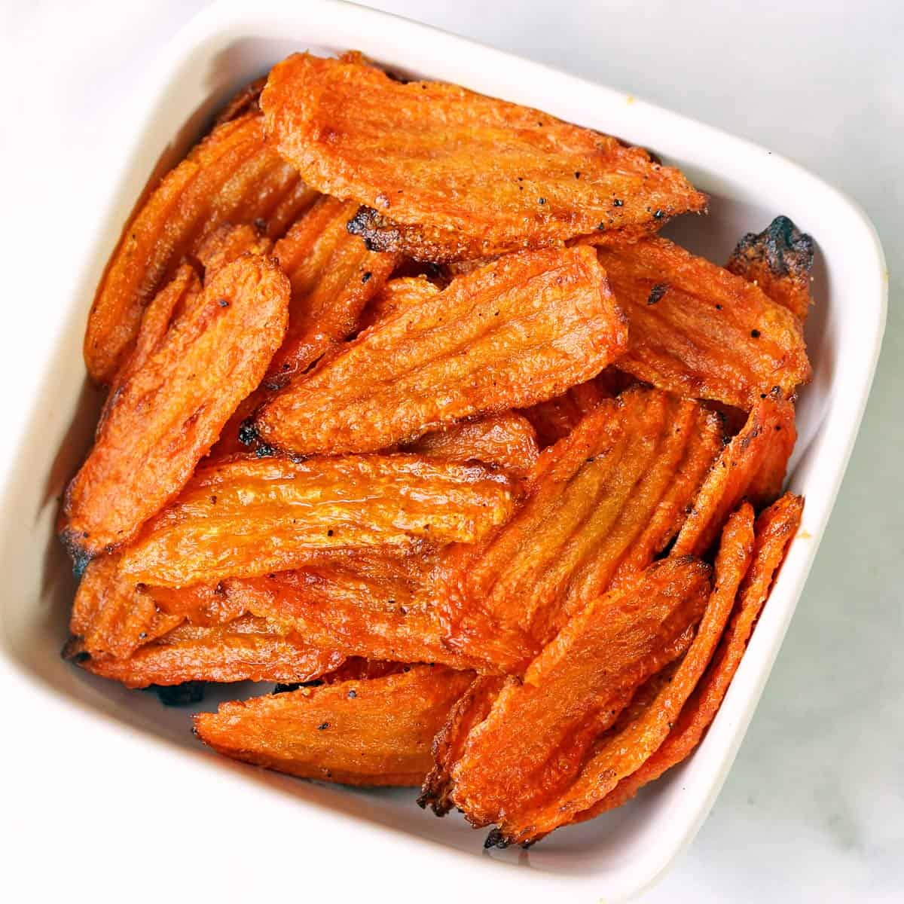

Carrot Chips

Servings: 4
Calories: 106
Category: Side
Cuisine: American
Equipment
Ingredients
- 1 lb Carrots
- 2 Tbsp Olive Oil
- 1 TSP Salt
- 0.25 TSP Black Pepper
- 0.5 TSP Garlic Powder
Instructions
- Preheat the oven to 450°F. Line two large, rimmed baking sheets with high-heat-resistant parchment paper.
- Spread the carrot slices on paper towels to remove excess water. Transfer them to a large bowl and toss them with olive oil, salt, pepper, and garlic powder.
- Spread the carrot slices in one layer on the prepared baking sheets.
- Bake them until browned and crispy, for about 20 min
- If the carrots are not evenly sliced and some slices are still not crispy, remove the crispy ones to a plate and continue baking for about 5 more minutes to crisp up the thicker slices. Watch them closely to make sure they don’t burn.
- Serve immediately, alone or with your favorite dip.
Recipe Source: Vered DeLeeuw Healthy Recipes
Home